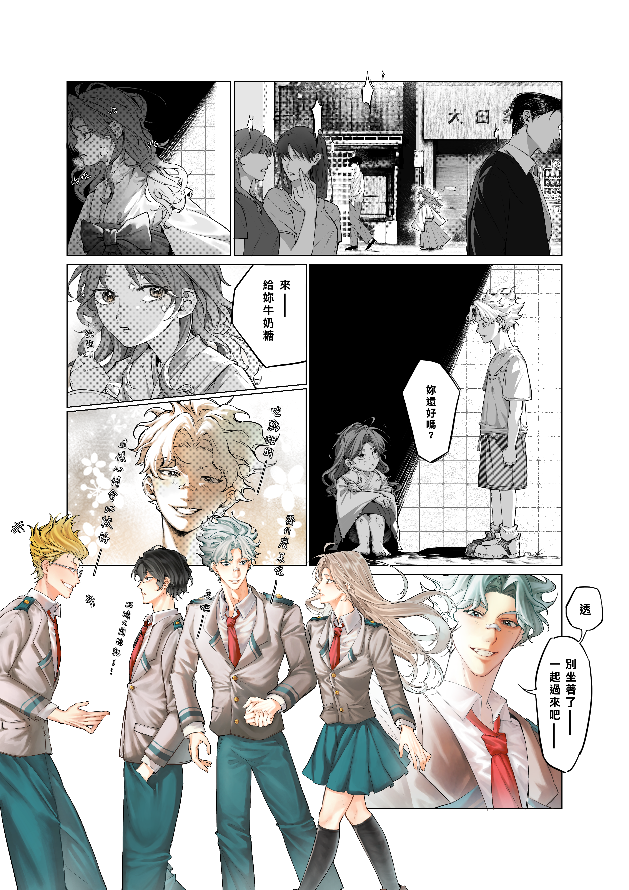

CHAPTER 02
透的父親心崎岩一個性強化至鼎盛時期觸發了AFO的詛咒—劫禍
不要回頭。
---
母親撕心的哭聲仍然在她耳畔震耳欲聾，她自此記住了母親將她緊擁在懷的疼痛，母親抱得太緊了，是因為生怕落下了她，心崎透記得她呼之欲出的心跳，直到最後只留下她一個人，她仍然不得不服從於那顆為了維護她而停止跳動的心臟奔跑。她太害怕了。這種畏懼來自茫然、恐慌與未知，心崎透不明白。
她的雙腳陷入了路面的碎石，脫皮的足底龜裂了血痂，血液早已流不下來了。她仍然奮力地逃竄，哪怕不曉得發狂的父親是否仍能追蹤她如今的去向。到底是為什麼呢？是發生了什麼事才使得她最愛的父親殺了她的爺爺、哥哥，甚至拚命抱著她逃生的母親——跑。透，繼續跑，不要回頭！連夜的奔走使得她心力交瘁，直至白天，她仍然沒有找到暫歇的居所，接連好幾個日與夜。
她該去哪裡？又在什麼時候可以停下？心崎透蜷縮著身體，抱著自己沾染灰塵的軀體，她感覺飢餓，發覺自己雙腿發軟、意識模糊，在熱天裡的陽光，這雙黏上汗水、血痂的眼皮昏沉欲睡，可她是抱著畏懼才勉強著自己仍然得以行走。
心崎透闔上了眼睛，她緊接著又恍然地張開了眼。她聽見母親對她說「不要死」。 可是她已然疲倦的不想再走了。她知道自己的身體正在搖晃，連幾日的精神緊繃和虛弱使然地，這一天的陽光曬得她本就發漲疼痛的腦袋暈眩，她感覺呼吸不紊，心崎透甚至不自覺自己曾經抬頭，目光就從陌生的街道向上移轉至無雲的天空——她被太陽曬了昏頭，再一次視線潰散以前，卻在無雲的天空裡看見了一道淺藍色的影子。 一張很模糊的臉，還有屬於男孩爽朗正氣的聲音。聲音使她的耳畔嗡嗡作響。
不要緊吧？男孩問。
他的身體恰好替她遮住了太陽，她脫力的眼眶睜不開來，卻感覺自己的手裡被突兀地塞入了某個東西，在掌心裡發黏稠。突然，她意識到了，這是一塊糖，一塊即將融化在她掌腹中的牛奶糖。
——僅有七成掉入了她的胃裡，餘下的甜好像自從來到了她的手中，就未曾消散殆盡。
然後她才看清楚了男孩的眼睛、微笑的面孔。
就忘不了。男孩無心地替她解了平生的苦，好像一束荒漠甘泉，她乾涸的喉嚨吞咽不下塊狀的糖，糖終於融化在她的唇舌之間，被緩緩地、艱難地吞下。她於是終於得已用乾裂了唇肉的嘴巴說話。
謝謝你。
很久，很久以後，當白雲朧在他成長後的少年時期，一個櫻樹開花的明媚的春天，邂逅一個擁有倔強眼睛的沉靜的女孩，他將感覺她擁有讓他熟悉的一雙眉眼。而當很久，很久以後，心崎透在座位前後，撞上了一個元氣的男孩笑臉，她會為此一怔，然後忽然想不起來自己應當作何感想，她會心裡隱隱作動地，想著那個男孩縱然不至於相見恨晚，可隱約地使得她一瞬心動。
